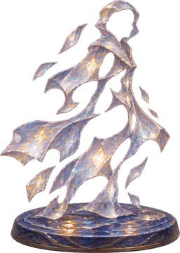
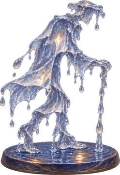
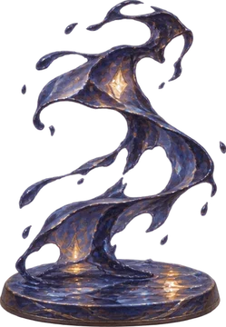

Фонари утонувшего города
Карты и фигурки ведущего
Игровой комплект
3 игрока · 4 игрока · 5 игроков · 6 игроков · 7 игроков
Карта кампании

Поля боя


Герои


Персонажи ведущего


Противники


Фарфоровая помеха 1Фарфоровая помеха 5Фарфоровая помеха 2Фарфоровая помеха 3Фарфоровая помеха 4

Дождевой отблеск 5Дождевой отблеск 4Дождевой отблеск 1Дождевой отблеск 2Дождевой отблеск 3

Чернильный контур 1Чернильный контур 2Чернильный контур 4Чернильный контур 5Чернильный контур 3